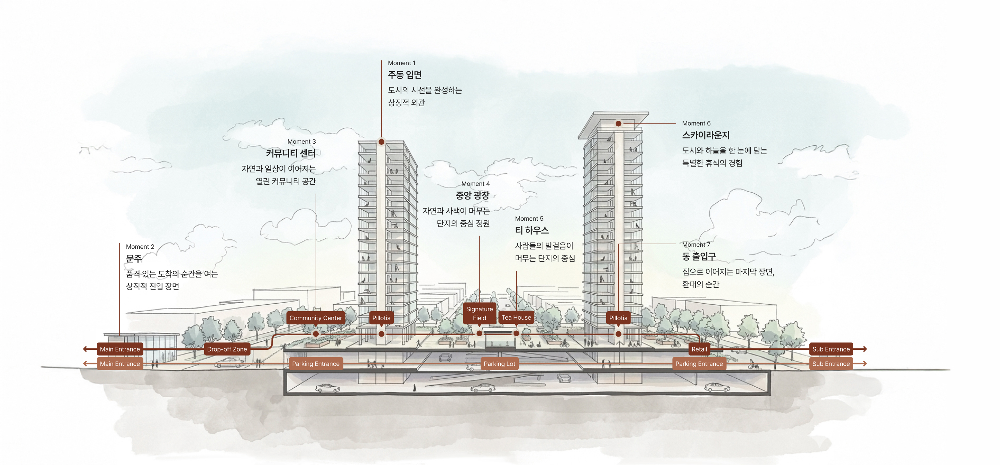
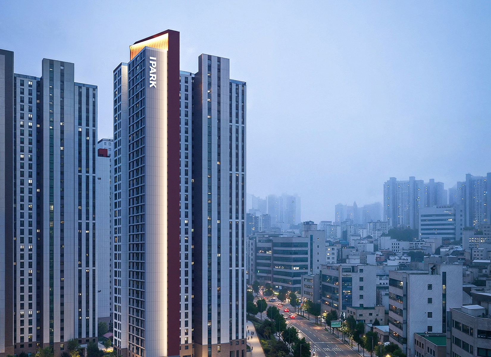
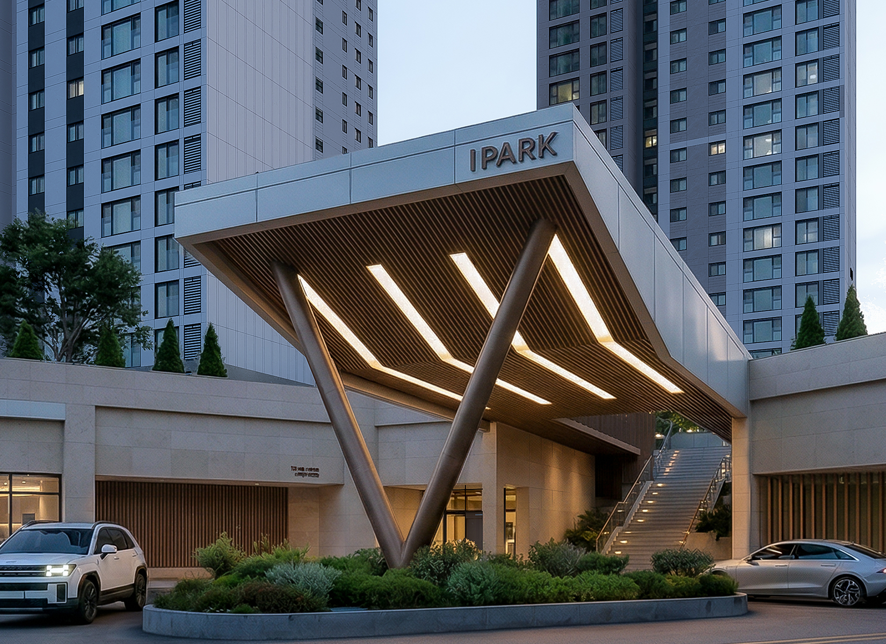
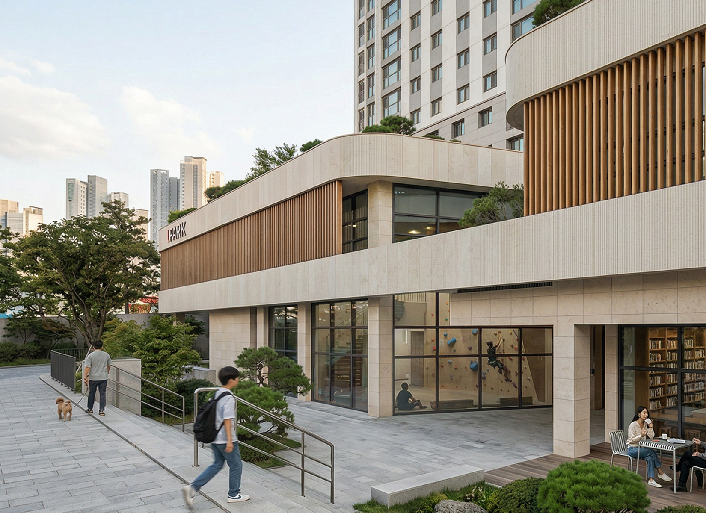
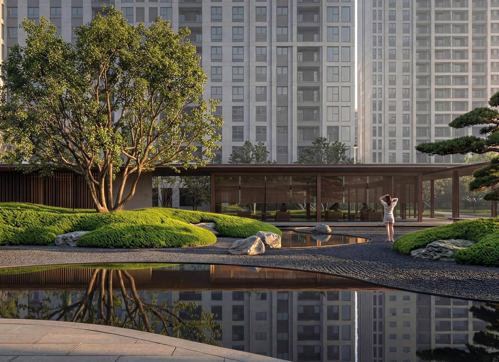
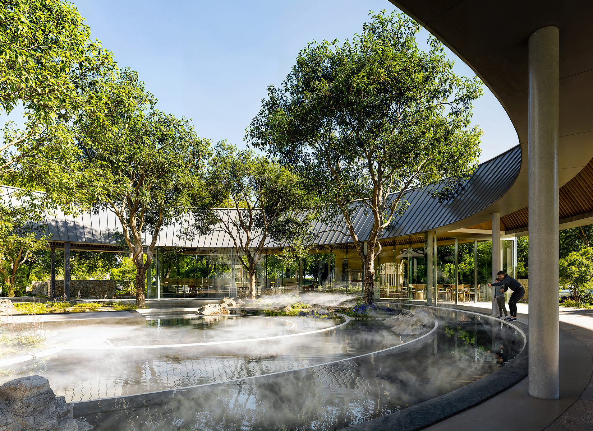
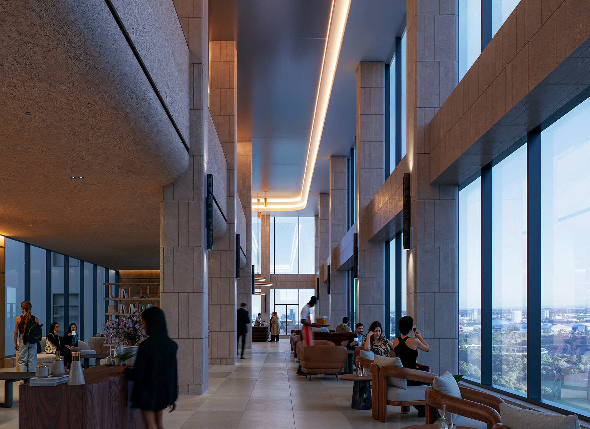
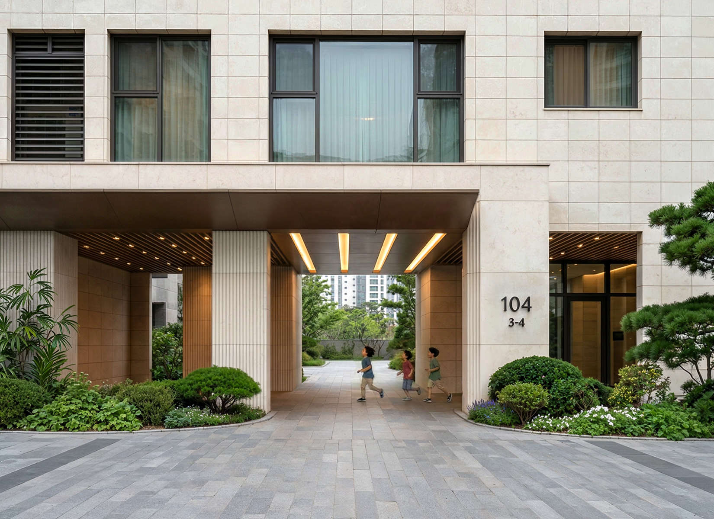

DESIGN`, subTitle: `공간에서 감각으로`, desc: `건축과 공간을 넘어 도시·문화·라이프스타일까지
아우르는 통합적 디자인을 통해,
일상과 경험을 유기적으로 연결하는
‘Creator of Life Space’로서
아이파크의
주거 라이프를 새로운 경험으로 완성합니다.`, })%>
Design Philosophy
IPARK에서 누리는
일상의 순간,
IPARK에서 거니는
공감의 여정
집 밖에서 집 안으로 이어지는 모든 여정을 하나의 공간 경험으로 설계합니다.
일상 속 특별한 순간들, PARK MOMENTS가 이어져 IPARK만의 PARK WAY를
품격있게 완성합니다.

-
Moment 1
도시를 사로잡는 상징적 풍경,
첫 인상을 완성하는 외관IPARK의 주동 디자인은 단순한 외관을 넘어
삶을 바라보는 새로운 시선을 제안합니다.빛과 바람이 머무는 공간의 흐름을 열고,
당신의 일상이 하나의 작품으로 보일 수 있는
감각적인 건축의 틀을 완성했습니다.정교하게 설계된 입면의 조형미는
단지의 품격을 세우고,
매일 마주하는 건축의 선은
당신의 일상에 특별한 영감을 더합니다.
-
Moment 2
일상의 여정을 여는 첫 장면,
한 차원 높은 경험으로의 진입문주는 단순한 경계 요소를 넘어,
단지의 품격과 정체성을 처음으로 마주하는 공간입니다.수공간과 조경이 어우러진 진입 풍경 속에서
단지와 자연스럽게 이어지는 맞이 공간은
특별한 공간에 도착한 듯 환대받는 경험을 선사합니다.단지로 들어서는 여정의 첫 순간부터,
당신을 IPARK만의 특별한 경험으로 초대합니다.
-
Moment 3
자연과 연결된 흐름 속,
풍경을 품은 커뮤니티IPARK의 커뮤니티 센터는
단지의 지형과 주변 풍경을 자연스럽게 이어
실내와 외부가 유기적으로 연결되는
개방감 있는 공간을 제공합니다.자연의 흐름을 따라 열린 공간 속에서
휴식과 소통의 순간은 더욱 깊어지고,
일상의 시간은 더욱 여유로운 경험으로 확장됩니다.풍경과 함께 머무는 커뮤니티 공간은
입주민의 일상에 새로운 활력을 더합니다.
-
Moment 4
삶의 균형을 찾아가는
사색의 여정, 사유의 정원IPARK의 야외공간은 단순히 공간을 만드는 것을 넘어,
주거의 본질을 새롭게 정의합니다.이곳에서 당신의 사색은 삶의 균형을 찾아가는 여정이 되고,
자연, 그리고 사람과의 교류를 통해
새로운 삶의 활력이 재탄생됩니다.바쁜 일상 속에서 단순히 몸을 뉘는 장소가 아닌,
삶의 본질적인 의미를 발견하는 정신적 휴식처,
그것이 IPARK가 새롭게 선사하는 사유의 정원입니다.
-
Moment 5
발걸음이 모이는 중심 풍경,
휴식과 이야기가 머무는
티하우스티 하우스는 입주민의 일상 속에서 잠시 머물며
휴식과 재충전을 누릴 수 있는 공간입니다.조경과 풍경을 가까이에서 즐기는
열린 공간 속에서 머무는 시간은
더욱 깊은 휴식으로 이어지고
자연스럽게 사람들의 이야기가 흘러갑니다.단지의 중심에서 사람들의 발걸음이 모이는 이곳은
모두의 일상이 교차하는 공간이자
IPARK의 상징적인 풍경으로 자리합니다.
-
Moment 6
하늘 위로 확장된 일상,
새로운 시선이 열리는
스카이 라운지단지의 가장 높은 곳에서
도심의 풍경과 하늘이 맞닿는 공간.루프탑 조경과 열린 조망이 어우러져
일상의 시간은 한층 넓은 풍경으로 확장되고,
다양한 프로그램과 감각적인 공간 경험이
머무는 순간을 더욱 특별하게 만듭니다.이곳은 입주민의 자부심이 되는
IPARK만의 스카이라운지입니다.
-
Moment 7
하루의 여정이 머무는
동 출입구, 집으로 이어지는
환대의 순간동 출입구는 하루의 여정 끝에서
집으로 이어지는 마지막 공간입니다.단지로 이어지는 흐름 속에서
상징적인 진입 공간과 섬세한 디테일이 어우러져
집으로 향하는 순간에 깊은 인상을 더합니다.따뜻한 분위기와 감각적인 공간 연출은
집으로 돌아오는 매일의 발걸음을
환대의 경험으로 완성합니다.
IPARK Masterpiece